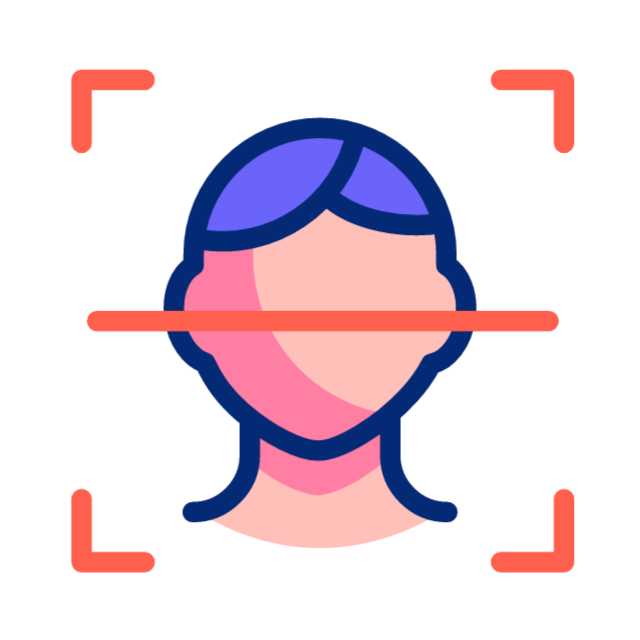
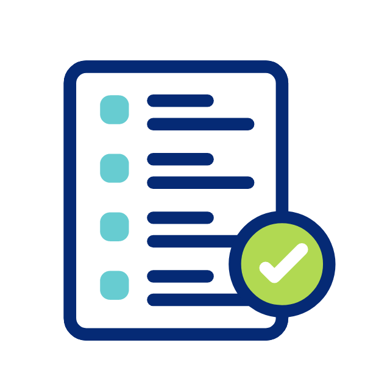

Selamat malam, Fadli5. Silakan pilih menu untuk melakukan aktivitas absensi.
Kamis, 6 Agustus 2026
Pilih menu untuk melakukan daftar wajah, verifikasi hadir, pengajuan izin, atau melihat riwayat absensi.

Simpan data wajah sebagai identitas utama untuk proses absensi.
Lakukan absensi menggunakan face scan, liveness, dan lokasi.

Kirim izin atau sakit dengan keterangan dan bukti foto.
Lihat riwayat hadir, izin, dan alfa yang sudah tercatat.